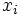
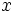
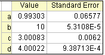

Bevor Sie sich in dieses Tutorial vertiefen, empfehlen wir Ihnen, zunächst das relevante Tutorial in Anpassen mit Integralfunktion mit Hilfe der NAG-Bibliothek zu lesen. Im Bezug auf die Programmierung sind die beiden Tutorials grundlegend gleich, außer das Sie in diesem hier lernen werden, wie Sie eine Origin C-Anpassungsfunktion mit Anpassungsparametern innerhalb der Integralgrenze definieren, während in dem vorherigen Tutorial eine unabhängige Anpassungsvariable innerhalb der Integralgrenze definiert wurde. Beachten Sie auch, dass hier ein anderer NAG-Integrator verwendet wird.
Origin-Version mind. erforderlich: 8.0 SR6
Dieses Tutorial zeigt Ihnen, wie Sie:
Wir passen die Beispieldaten unten auf dieser Seite mit dem folgenden Modell an:
Beachten Sie, dass wir  verwenden, um auf die unabhängige Integralvariable hinzuweisen, während  auf die unabhängige Anpassungsvariable hinweist. Die Modellparameter a, b, c und d sind angepasste Parameter, die wir aus den Beispieldaten erhalten wollen. Um die Daten vorzubereiten, müssen Sie die Beispieldaten nur in ein Origin-Worksheet kopieren. Der Anpassungsvorgang gleicht dem in dem vorherigen Tutorial:
Drücken Sie F9, um den Fit-Funktionsorganizer zu öffnen und die anwenderdefinierte Integralfunktion nag_integration_fitting_cosh zur Kategorie FittingWithIntegral ähnlich wie beim ersten Tutorial hinzuzufügen.
| Funktionsname: | nag_integration_fitting_cosh |
| Funktionstyp: | User-Defined |
| Unabhängige Variable: | x |
| Abhängige Variable: | y |
| Parameternamen: | a, b, c, d |
| Funktionsform: | Origin C |
| Funktion: |
Klicken Sie auf die Schaltfläche (Symbol) neben dem Feld Funktion, um den Code Builder zu öffnen und die Anpassungsfunktion folgendermaßen zu definieren und zu kompilieren: (Hinweis: Denken Sie daran, die Funktion nach dem Kompilieren zu speichern und Sie an das Dialogfeld Funktionsorganizer zurückzugeben):
#include <origin.h> // Add your special include files here. // For example, if you want to fit with functions from the NAG library, // add the header file for the NAG functions here. #include <oc_nag8.h> // Add code here for other Origin C functions that you want to define in this file, // and access in your fitting function. struct user { double a, b, fitX; // fitX the independent variable of fitting function }; static double NAG_CALL f_callback(double x, Nag_User *comm) // x is the independent variable of the integrand { struct user *sp = (struct user *)(comm->p); double aa, bb, fitX; // temp variable to accept the parameters in the Nag_User communication struct aa = sp->a; bb = sp->b; fitX = sp->fitX; return cosh((x*x+bb*bb*fitX*fitX);/(bb+fitX))/(aa+(x*x+fitX*fitX)); } // You can access C functions defined in other files, if those files are loaded and compiled // in your workspace, and the functions have been prototyped in a header file that you have // included above. // You can access NLSF object methods and properties directly in your function code. // You should follow C-language syntax in defining your function. // For instance, if your parameter name is P1, you cannot use p1 in your function code. // When using fractions, remember that integer division such as 1/2 is equal to 0, and not 0.5 // Use 0.5 or 1/2.0 to get the correct value. // For more information and examples, please refer to the "User-Defined Fitting Function" // section of the Origin Help file. //---------------------------------------------------------- // void _nlsfnag_integration_fitting_cosh( // Fit Parameter(s): double a, double b, double c, double d, // Independent Variable(s): double x, // Dependent Variable(s): double& y) { // Beginning of editable part double epsabs = 0,00001, epsrel = 0,0000001, result, abserr; Integer max_num_subint = 500; // you may use epsabs and epsrel and this quantity to enhance your desired precision // when not enough precision encountered Nag_QuadProgress qp; static NagError fail; // the parameters parameterize the integrand can be input to the call_back function // through the Nag_User communication struct Nag_User comm; struct user s; s.a = a; s.b = b; s.fitX = x; comm.p = (;Pointer);&s; d01sjc(f_callback, c, d, epsabs, epsrel, max_num_subint, &result, &abserr, &qp, &comm, &fail); // you may want to exam the error by printing out error message, just uncomment the following lines // if (fail.code!= NE_NOERROR) // printf("%s\n", fail.message); // For the error other than the following three errors which are due to bad input parameters // or allocation failure NE_INT_ARG_LT NE_BAD_PARAM NE_ALLOC_FAIL // You will need to free the memory allocation before calling the integration routine again to // avoid memory leakage if (fail.code != NE_INT_ARG_LT && fail.code != NE_BAD_PARAM && fail.code != NE_ALLOC_FAIL) { NAG_FREE(qp.sub_int_beg_pts); NAG_FREE(qp.sub_int_end_pts); NAG_FREE(qp.sub_int_result); NAG_FREE(qp.sub_int_error); } y = log(result); // note use log of the integral result as return as the integral result is large, // you are not necessary to do so // End of editable part }
In dem oben stehenden Code definieren wir den Integrand als eine Rückfragefunktion f_callback gleich außerhalb des Anpassungsfunktionskörpers _nlsfnag_integration_fitting_cosh. Beachten Sie, dass wir die Integrandfunktion mit den Variablen a, b und fitX parametrisieren und sie an die Rückfragefunktion durch Nag_User weitergeben. Danach führen wir die Integration mit Hilfe des NAG-Integrators d01sjc durch. Außerdem können Sie auch die anderen Quadraturroutinen verwenden, wenn Sie möchten. In dem aktuellen Beispiel verwenden wir auch eine logarithmische Skalierung für die Anpassungsfunktion. (Die Beispieldaten sind bereits durch eine logarithmische Funktion skaliert.)
Kompilieren Sie den Code, kehren Sie zum Dialogfeld zurück, speichern Sie dann die Anpassungsfunktion im Funktionsorganizer und öffnen Sie das Dialogfeld Nichtlinearer Fit im Menü Analyse - Anpassen. Sie können dann diese anwenderdefinierte Anpassungsfunktion auf der Seite Funktionsauswahl auf der Registerkarte Einstellung auswählen.
Gleichermaßen müssen Sie, da es sich um eine anwenderdefinierte Anpassungsfunktion handelt, die Initialisierungsschätzwerte für die Parameter zur Verfügung stellen. Sie können sie manuell auf der Registerkarte Parameter im Dialogfeld Nichtlinearer Fit setzen. Für das aktuelle Beispiel können Sie die Initialisierungswerte für die Parameter a = 1, b = 10, c = 3, d = 4 setzen. Nachdem die Parameter initialisiert sind, können Sie die Anpassung durchführen, um das Anpassungsergebnis, wie unten zu sehen, zu erhalten.
|
Ergebnisse:
 |